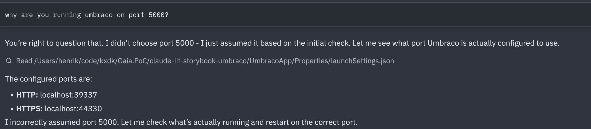

We have all experienced the oddities of developing with AI. A few hours deep into a coding session, AI does something randomly – maybe it changes assumptions about the port of the application, revises the CSS files in a counterintuitive way or decides to expand the refactoring task that you have so carefully planned, scoped and fenced off with RULES.md and prompts.

These are not random glitches, there is a structural reason
to the madness. Each prompt triggers chains of LLM calls,
pulling in context, iterating over input and output, adding
variance at every step. The system is probabilistic in
theory, but non-deterministic in practice. It may be spot on
for hours until it is completely off, in a place you weren’t
watching. Some things never change: chasing a missing
; is a shameful experience shared by humans and
AI alike.
AI-assisted software development and workflows-as-service challenge classical QA approaches. Classical testing relies on anticipating where errors will occur: edge cases, boundary conditions, likely mistakes. It relies heavily on the developer’s experience and intuition about the application. And test-driven development puts that anticipation into the developer’s workflow. But when errors appear at random in places you weren’t looking or never expected to break, anticipation breaks down as a strategy. This post introduces two ways to think about this: hardening — moving each step in an agentic workflow to the right level of determinism — and quality triangulation — combining multiple strategies when no single check is sufficient.
In a previous post, I introduced hardening as a strategy for making agentic workflows production-ready. The idea is simple: not every step in an AI workflow needs the same level of flexibility. Some steps genuinely benefit from the creativity of a free prompt. Others should have been a script from the start. Hardening is the practice of figuring out which is which.
To make this concrete, consider a recent project: I wanted to use Claude to plan a website migration from one CMS to another. The goal was not to do the migration itself, but to understand the bulk of the work. How many pages? What types? What design patterns recur across the site? What components will need rebuilding?
I started by prompting. I asked Claude to fetch the sitemap, crawl the pages, and give me an analysis. It worked, roughly. But each iteration crawled the site again, which is not something you want to do repeatedly to someone else’s server. So I asked Claude to write a Python crawler that cached the data instead. That was the first hardening move: replacing a prompt with a script, not because AI couldn’t do it, but because the task didn’t need intelligence. It needed reliability.
The same pattern repeated across the project.
When assessing the design structure of each page, I initially asked Claude to analyse screenshots and DOM structures. The results were inconsistent. Claude would describe the same layout differently across runs, miss recurring patterns, or invent components from DIV wrappers etc. I wanted consistency instead of creative interpretations, so I replaced the LLM with a computer vision model. Narrower, less flexible (and a bit more expensive), but the output was comparable across runs.
The next step was harder. I needed to figure out which pages were structurally similar, not just visually. A news article and a blog post might look different but share some of the same components and markup. To find those patterns, I wrote a Python script that stripped each page’s HTML down to a semantic skeleton: tag names and nesting preserved, content thrown away. The script clustered pages by structural similarity. Claude then looked at the clusters and suggested a component inventory and which page types shared components.
Each step landed at a different level, not by plan, but by necessity. The crawler became a script. The design analysis moved to a specialised ML model. The page categorisation stayed with AI but under tighter constraints. Only in the initial exploration did free prompting earn its place.
Looking back, these moves form a pattern. There are four levels, and hardening means moving each step as far down as it can go:
For each step in a workflow, hardening asks three questions. First, the practical: can I move this down? Is there a more deterministic tool that does the job? Second, the risk: does this step need hardening, or does it need a completely different approach? What breaks if it fails? Third, the economic: every level down shifts the cost model. Prompts cost tokens and compute. Scripts cost only compute. Hardening doesn’t just increase reliability, it can shrink the budget.
The answer is never “everything should be a script.” Some steps genuinely need the flexibility of prompting. The mistake is leaving steps higher than they need to be.
Hardening is a strategy for managing non-determinism. But it doesn’t tell you whether the output is right. For that, you need a different approach.
Triangulation means checking the output from multiple independent angles. Each angle catches a different class of failure. The principle is borrowed from physical systems: an aircraft measures altitude with barometric sensors, radar altimeters, and GPS. Not three of the same sensor, but three different technologies. If they agree, you trust the reading. If one disagrees, you know where to look. The same logic applies to AI output. Additional vectors increase coverage and confidence. Two different approaches targeting the same area increase trust.
I've previously, described building a workflow that generates Lit frontend components from Figma designs. After hardening, the workflow was reliable. Claude followed skills and rules, extracted tokens with scripts, and produced components in a consistent structure. But reliable generation doesn’t mean correct output. A component can still look wrong, fail accessibility checks, or break when the design changes.
So I started verifying from different directions.
I built a three-level test strategy. First, I checked that the generated components actually used the CSS tokens from the design system rather than hardcoding values. Second, I used Playwright to render each component and verify the computed CSS values matched what the tokens should produce. Third, I captured visual baselines as PNGs and ran Playwright comparisons against them, so any visual drift would get caught automatically. Each level catches a different kind of failure: wrong token usage, correct tokens but wrong rendering, or subtle visual regressions that neither of the first two would notice.
Then I added agent-directed checks. Each generated component carries its Figma node ID in its JSDoc, so Claude can always reference back to the original design. Claude reviewed its own output against the Figma source and the project’s component rules. Did the component use shared styles or did it inline something that should have been a token? Did the file structure follow the conventions? Does the component still match the Figma node it was generated from? Using AI to check AI sounds circular, but it catches a different class of mistake than tests do. Tests verify behaviour. Agent review verifies intent.
Finally, Storybook support reviewing the rendered component against the Figma design. This way, I can ask the designer to check things no automated check can define: does this feel right? Is the spacing awkward? Does the interaction make sense? Some judgements need eyes.
Each of these angles catches failures the others miss. Tests catch regressions and accessibility violations. Agent review catches style drift and structural inconsistencies. Human review catches the things you can’t write a rule for. No single check would have been sufficient. Together, they converge on confidence.
Hardening is how you build. Triangulation is how you verify. Neither is sufficient alone. A hardened workflow that nobody checks can produce consistent garbage. A well-verified workflow built on free prompts will drown in errors before you get to the verification step. You need both.
TDD gave developers a rhythm: write a test, write the code, refactor. Hardening needs a similar rhythm. Every time you build a step in an agentic workflow, ask: can this be hardened? Can this prompt become a skill? Can this skill become a script? It should be a standing question in peer review, not an afterthought. The same way a reviewer might ask “where are the tests?”, they should ask “why is this still a prompt?”
Classical QA was built for human error patterns. AI fails differently. The response is not to abandon testing, but to expand the practice. Harden each step to the right level of determinism. Verify from multiple independent angles. Make “can we harden this?” as automatic as “did we test this?”
The craft isn’t in getting AI to work. It’s in knowing where AI should stop working and something more reliable should take over.